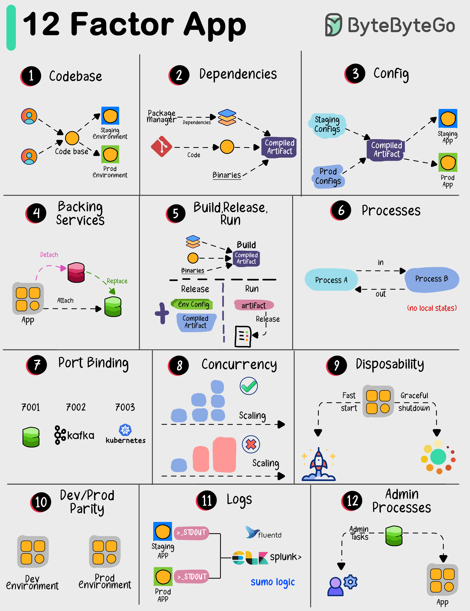

The “12 Factor App” offers a set of best practices for building modern software applications. Following these 12 principles can help developers and teams in building reliable, scalable, and manageable applications.
Here’s a brief overview of each principle:
Have one place to keep all your code, and manage it using version control like Git.
List all the things your app needs to work properly, and make sure they’re easy to install.
Keep important settings like database credentials separate from your code, so you can change them without rewriting code.
Use other services (like databases or payment processors) as separate components that your app connects to.
Make a clear distinction between preparing your app, releasing it, and running it in production.
Design your app so that each part doesn’t rely on a specific computer or memory. It’s like making LEGO blocks that fit together.
Let your app be accessible through a network port, and make sure it doesn’t store critical information on a single computer.
Make your app able to handle more work by adding more copies of the same thing, like hiring more workers for a busy restaurant.
Your app should start quickly and shut down gracefully, like turning off a light switch instead of yanking out the power cord.
Ensure that what you use for developing your app is very similar to what you use in production, to avoid surprises.
Keep a record of what happens in your app so you can understand and fix issues, like a diary for your software.
Run special tasks separately from your app, like doing maintenance work in a workshop instead of on the factory floor.